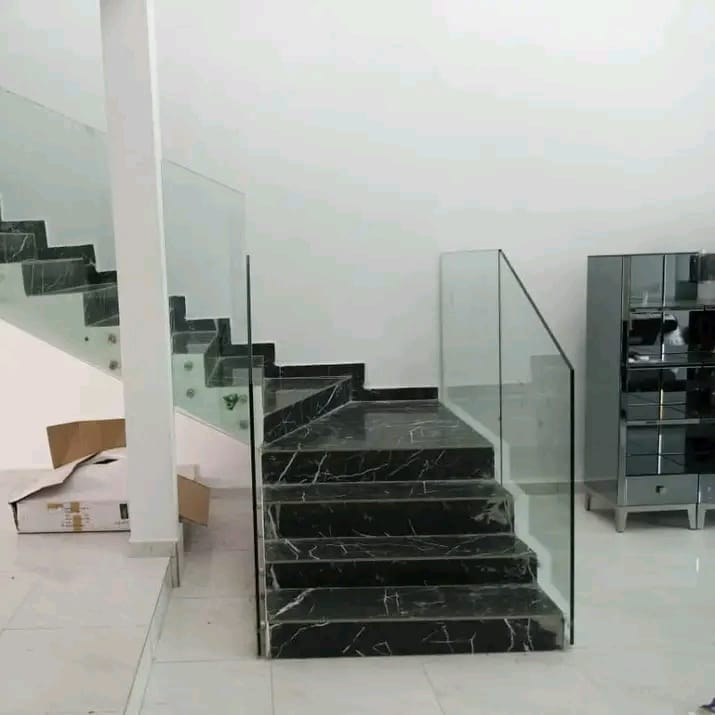

Le geste juste. La finition soignée.
FTS Aluminium · Abidjan
Des solutions sur mesure, pensées pour durer.
Basée en Côte d'Ivoire, précisément à la Riviera Faya à Abidjan, FTS Aluminium accompagne les particuliers et les professionnels dans leurs projets résidentiels, commerciaux et industriels. De la conception à la fabrication et à la pose, l’équipe réalise des ouvrages en aluminium, en verre et en inox avec un bon rapport qualité-prix, un service personnalisé et un soin particulier des finitions.
↗ Conception sur mesure
↗ Fabrication et pose
↗ Maintenance
↗ Bon rapport qualité-prix